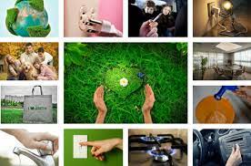

Las tres erres más importantes en lo que a contaminación se refiere. Reducir el consumo de gasto energético y bienes permite disminuir el impacto producido sobre el medio ambiente. Se trata de que nos concienciemos y seamos consumidores mucho más responsables. ¿Cuántas veces has comprado productos que realmente no necesitabas? En este sentido, es importante también consumir producción local, lo que favorece una reducción de los transportes y lo que ellos conllevan. Dar una segunda vida a los productos es otra premisa para cumplir con la sostenibilidad. Además, contribuimos a reducir nuestros gastos y mejorar nuestra economía. ¡Son todo ventajas! Pero ¿qué pasa con aquellos productos que sí que tenemos que comprar y que no podemos reutilizar? El reciclaje entra en juego para cubrir esta necesidad y permitir la generación de nuevos productos y la reducción de gases contaminantes. ¡En nuestras propias manos está contribuir al cuidado del medio ambiente!